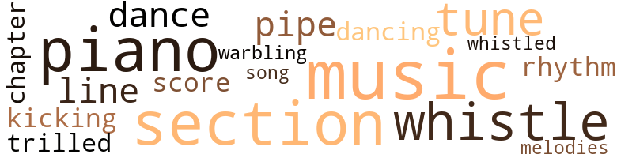
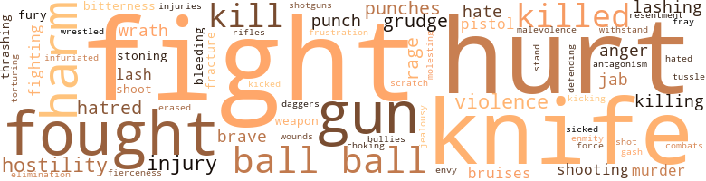

Wolf Kitty, by Bellinger, Claudia (1958)
48 music-related terms matched in this text.
Most frequent terms in this topic: music (9); section (7); piano (7); whistle (5); tunes (3)
chapter.n.01
Definition: a subdivision of a written work; usually numbered and titled
| word | sentence |
|---|---|
| chapter | He begged her to go back to her people and live with the memory of their relationship and cherish it as a beautiful chapter of her life , as he intended to do himself . |
dance.n.01
Definition: an artistic form of nonverbal communication
| word | sentence |
|---|---|
| dances | It reached the point where he invited her to dinner , and then to dances . |
dance.v.03
Definition: skip, leap, or move up and down or sideways
| word | sentence |
|---|---|
| dancing | There was shouting and dancing and men erected flag poles upon high places and set huge fires to burning . |
| dance | See Alice , the most educated elephant in the world , dance the shimmy-shee-warble . " |
kick.v.04
Definition: kick a leg up
| word | sentence |
|---|---|
| kicking | The mob surged on , jeering , beating and kicking their victim , who stumbled along fear-ridden , crazed and cramped in tormenting misery . |
music.n.01
Definition: an artistic form of auditory communication incorporating instrumental or vocal tones in a structured and continuous manner
| word | sentence |
|---|---|
| music | As they passed a dance hall , the piano music floated out , sending a thrilling sensation up and down their spine . |
| music | The sheet music sounded good to their ears . |
| music | In those days piano music was the highlight of entertainment . |
| music | Buster played divinely ; his hands , running over the keys , created the kind of music that stirred the souls of the nightlifers . |
| music | He was their idolized prince of rag-time music . |
| music | They were walking along a street and passed a house where piano music floated out sounding inviting . |
| music | Piano music and laughter were coming from another room . |
| music | We heard the music and just stopped by . " |
| music | They strolled around town and came to a place where there were music and dancing . |
piano.n.01
Definition: a keyboard instrument that is played by depressing keys that cause hammers to strike tuned strings and produce sounds
| word | sentence |
|---|---|
| piano | " I 'm going to learn to play the piano , " Buster said . |
| piano | He could play the piano very well , so he got a job playing at a night club . |
| piano | One night as he sat at the piano , he felt a pat on his shoulder . |
| piano | " You said it . . . I 'll sec you around , I 've got to get back to work , " Buster said and went back to his piano . |
| piano | " I play the piano , " Buster said , " and my friend here can do most any kind of work . |
| piano | So can I , but I like piano best . " |
| piano | One woman slipped her arm around his and was walking beside him toward the piano , with her cheek against his , leaning against him , as her husband walked in . |
pipe.n.04
Definition: a tubular wind instrument
| word | sentence |
|---|---|
| pipe | He sat in a comfortable chair on the broad porch of his home smoking his favorite pipe , watching people and vehicles passing by . |
| pipe | Amos knocked the ashes from his pipe and laid it aside . |
rhythm.n.04
Definition: the arrangement of spoken words alternating stressed and unstressed elements
| word | sentence |
|---|---|
| rhythm | His nimble fingers rambled over the keys , giving out such rhythm as to send his listeners into wild ecstasy . |
score.n.02
Definition: a written form of a musical composition; parts for different instruments appear on separate staves on large pages
| word | sentence |
|---|---|
| score | Fie harbored the knowledge that they had fought as children and he still held that against Buster , determined to even the score , as he thought . |
section.n.01
Definition: a self-contained part of a larger composition (written or musical)
| word | sentence |
|---|---|
| section | The boys were heading toward Breakwater Street , a no-torious section of town where every land of vice and crime prevailed . |
| section | " I was passing through the Mill village section , and as I said I just happened to be passing by in time to rescue the lad from an angry mob of boys who were pelting him with stones . |
| section | It was a peaceful neighborhood ; everyhing was going along smoothly , and there were no reasons for antagonism until some boys from another neighborhood came into this section of town and started trouble . |
| section | There were few residents in this section . |
| section | On his route to work , Buster drove his truck through this section to enter an alley to drive to the loading platform in the rear of the building . |
| section | They began to sort them out in bundles for each section of town . |
| section | Gleeful shouts of children and the barking of dogs filled the air as they played in the yards of the weatherbeaten shanties along the back streets of Springdale , in a section called Darkytown , where the dark-skinned folks lived . |
song.n.01
Definition: a short musical composition with words
| word | sentence |
|---|---|
| song | She trudged on , raising her voice in her favorite song . |
tune.n.01
Definition: a succession of notes forming a distinctive sequence
| word | sentence |
|---|---|
| line | It was customary for the children of Darkytown to gather along the track to count the long line of cars as the train passed through Springdale . |
| tune | He rushed home to tell about his good for - tune . |
| tunes | A person who could play all the popular tunes was in great demand . |
| tunes | Women swarmed around him in admiration and requesting to hear him play their favorite tunes . |
| tunes | The women folks crowded around him , asking him to play some of their favorite tunes . |
| lines | His Mother Jane 's face was creased in lines of age and suffering . |
| melodies | Songbirds trilled with all their might , warbling sweet melodies . |
warble.v.01
Definition: sing or play with trills, alternating with the half note above or below
| word | sentence |
|---|---|
| trilled | Songbirds trilled with all their might , warbling sweet melodies . |
whistle.v.01
Definition: make whistling sounds
| word | sentence |
|---|---|
| whistle | The sound of old Forty-eight was heard in the distance as the freight train rumbled along the tracks blowing its whistle as it approached a crossing a few miles down the tracks . |
| whistle | At that moment the whistle blew for dinner time . |
| whistle | When the whistle blew for the men to go back to work , Buster took the empty pail and together he and Sonny started back home . |
| whistle | The low , hoarse-sounding voice cut through the stillness again followed by a low whistle . |
| whistle | The next day at the railway station , Buster stood on the platform listening to the sound of the whistle as the train neared the station . |
| whistled | He whistled as he skipped along , unaware of danger lurking in the high weeds behind a pile of discarded crates and barrels . |
yodel.v.01
Definition: sing by changing register; sing by yodeling
| word | sentence |
|---|---|
| warbling | Songbirds trilled with all their might , warbling sweet melodies . |
247 violence-related terms matched in this text.
Most frequent terms in this topic: hurt (18); fight (15); knife (13); ball (13); fought (12)
abrasion.n.01
Definition: an abraded area where the skin is torn or worn off
| word | sentence |
|---|---|
| scratch | " No , ma 'm , it 's only a scratch . |
affray.n.02
Definition: a noisy fight
| word | sentence |
|---|---|
| fray | Their nerves were beginning to fray . |
anger.n.01
Definition: a strong emotion; a feeling that is oriented toward some real or supposed grievance
| word | sentence |
|---|---|
| anger | Envy and anger took possession of him . |
| anger | She prepared herself to face the ordeal of contending with her anger . |
| anger | All the boys kept their distance and thought twice before provoking his anger . |
| anger | Still they remained silent , with smoldering anger showing in their faces . |
bleeding.n.01
Definition: the flow of blood from a ruptured blood vessel
| word | sentence |
|---|---|
| bleeding | He 's bleeding . |
| bleeding | " All I know is dat Sonny come home bleeding and his shirt wuz all tore up . |
bruise.n.01
Definition: an injury that doesn't break the skin but results in some discoloration
| word | sentence |
|---|---|
| bruises | There was a lump on his head and bruises on his body . |
| bruises | No bones were broken and Sam felt no pain ; only the soreness of the bruises and the hurt in his heart were all that Sam felt at the moment . |
| bruises | " I was just wondering if I should notify the police , but of course if it 's only a matter of a few bruises , and the boy is not really hurt , there 'd be no need to stir up more trouble . |
cut.n.05
Definition: a wound made by cutting
| word | sentence |
|---|---|
| gash | He grasped it firmly with both hands and heaved it toward Buster , striking his leg ripping a deep gash in it . |
dagger.n.01
Definition: a short knife with a pointed blade used for piercing or stabbing
| word | sentence |
|---|---|
| daggers | These words were like daggers piercing their heart and plunging them into deep sorrow . |
defy.v.01
Definition: resist or confront with resistance
| word | sentence |
|---|---|
| withstand | The sight of the mangled body of his best friend was a frightful ordeal for a small boy to withstand ; he started to run home , weeping hysterically and clutching the dinner pail tightly . |
elimination.n.05
Definition: the murder of a competitor
| word | sentence |
|---|---|
| elimination | He pointed out the importance of every minor detail , to impress the court with the need for the elimination of a youth who had started early in life to make a career of crime . |
envy.n.01
Definition: a feeling of grudging admiration and desire to have something that is possessed by another
| word | sentence |
|---|---|
| Envy | Envy and anger took possession of him . |
erase.v.01
Definition: remove from memory or existence
| word | sentence |
|---|---|
| erased | They were the initials , B.B. and S.M. which would remain there until time erased the existence of that tree . |
ferocity.n.01
Definition: the property of being wild or turbulent
| word | sentence |
|---|---|
| fierceness | He went into Toby with the fierceness of an enraged beast . |
fight.n.02
Definition: the act of fighting; any contest or struggle
| word | sentence |
|---|---|
| combats | Although I 've had some tough combats with the elements , I 've always managed to save my ship and steer it to safety with my crew intact . " |
fight.n.05
Definition: a boxing or wrestling match
| word | sentence |
|---|---|
| fight | Ella Blackman was sitting on her porch when the fight started ; she came out to the playground when other grown-ups came on die scene . |
| fights | There would be fights ; there usually were on every payday . |
| fight | They stood around gossiping ; arguments would flare up , then a fist fight would ensue , sometimes ending in tragedy . |
| fight | And get in another fight wit dat boy ? |
| fights | But I must say this to you ... try not to get into any fights . " |
| fights | " Of course not , son , but keep away from the kind of boys and places where there 's likely to be fights . " |
| fight | The day before the fight , a group of neighborhood boys gathered at Jenkins ' Drug Store . |
| fight | Do n't misunderstand me , I am not upholding street brawls between youngsters , but that was a fair fight . |
| fight | Doll-baby put up a terrific fight of protest trying to keep him bound to her . |
| fight | Realizing he was in for a tough fight , Buster took precautions to protect himself . |
| fight | Seeing their buddy in trouble , the other two joined in the fight . |
| fight | The fight was over so quickly , no one else was aware of it except the two girls . |
| fights | They had plenty of fights with neighborhood boys , due to the fact that their secret was known and the boys tried to break it up . |
| fights | Instead the agitating boys got the worst of the deal in fist fights with Buster and Sonny . |
| fights | He 's constantly getting into . . . well , of course , it does n't mean too much , but child-like he gets into more fights and jams than any of the others . " |
fight.v.02
Definition: fight against or resist strongly
| word | sentence |
|---|---|
| fought | For several heated moments , both boys fought furiously . |
| fight | With drawn gun he entered the store cautiously , expecting to face men ready to fight in desperation to escape apprehension . |
| fought | The two boys fought madly for a few moments . |
| fought | The thought went through his mind that they had fought , yes , but they held no grudge nor hatred against each other . |
| fought | Mary Jane 's heart was saddened but she fought back signs of emotions that would betray her feelings . |
| fight | Sissie pretended not to be aware of this fact so that he might continue to fight against his sad feelings . |
| fighting | She had seen him as he came in and suspected that he had been fighting . |
| fighting | " I 've been fighting , " he answered . |
| fighting | " Who was you fighting with ? " |
| fought | Fie harbored the knowledge that they had fought as children and he still held that against Buster , determined to even the score , as he thought . |
| fight | She went on the witness stand to testify that , because of Buster 's fiery temper and because he was quick to fight with other boys , he was called Wolf Kitty . |
| fight | Then when Otis ' mother was called to the witness stand , she testified that Buster had disliked her Otis ever since they were small boys , when Buster used to fight her boy . |
| fought | He fought to overcome the smothering loneliness and depression he felt at times , and tried to bring cheer into the home . |
| fought | They were sorry that they had fought the day before . |
| fight | They apologized to each other and made promises that they would never fight each other again . |
| defending | Then , too , he knew the technique of defending himself . |
| fought | He fought madly . |
| fought | You fought for your life out there . |
| fought | He fought through the bitter cold of northern Canada 's winters and found warmth and security in the love he and Marie had for each other . |
| fought | So he fought a battle within himself . |
| fought | Whatever he wanted , he either fought for it or worked for it , so long as it was right . |
| fight | Mary Jane knew that if she could talk to him and show him how wrong it would be to fight with such an undesirable person , he would obey . |
fracture.n.01
Definition: breaking of hard tissue such as bone
| word | sentence |
|---|---|
| fracture | The doctor shook his head gravely and said to them , " I am afraid you have waited too late to do anything about it , there 's possibly a skull fracture . " |
| fracture | He was taken to a hospital where X-rays showed a skull fracture . |
frustration.n.03
Definition: a feeling of annoyance at being hindered or criticized
| word | sentence |
|---|---|
| frustration | The news came as so great a shock that she rushed out of the house and ran toward the scene in such a state of frustration she did n't take the time to find out which one of the boys it was . |
fury.n.01
Definition: a feeling of intense anger
| word | sentence |
|---|---|
| rage | He rose from the floor seething with violent rage . |
| rage | Ella 's ebony face smoldered with rage . |
| fury | Cotton 's fury rose to boiling rage as he recognized him . |
| rage | Cotton 's fury rose to boiling rage as he recognized him . |
| fury | With his hot-bloodedness and fiery temper , Buster was gripped by reckless fury . |
| rage | She flew into a rage when she saw the boys grouped around the basket of clothes . |
| rage | Ella often flew into a rage over some minor trivialities which she had a tendency to magnify , especially if it was anything concerning Buster and her Sonny . |
gag.v.06
Definition: cause to retch or choke
| word | sentence |
|---|---|
| choking | She waited for him to start talking , but what she heard was a choking sob . |
grudge.n.01
Definition: a resentment strong enough to justify retaliation
| word | sentence |
|---|---|
| grudge | The thought went through his mind that they had fought , yes , but they held no grudge nor hatred against each other . |
| grudge | Already having a grudge against Buster , Cotton took this as an opportunity to explode all the pent-up hatred he had against him . |
| grudge | And what made it so disgusting for Otis , was that he still held a grudge against Buster and maintained a notion that they were not on friendly terms . |
| grudge | For days he went about his task of cleaning out the stalls and assisting with the feeding of the horses , nursing the grudge he held against Buster , seeking an opportunity to do him harm . |
| grudge | I shall point out to you the diabolical cunning with which Otis Newton crept stealthily upon his victim , I mean Buster Brooks , and hit him a paralyzing blow across his back with a piece of iron rod , which he had kept in his possession for months , waiting for a chance to use it on Buster Brooks , in order to satisfy a grudge which he had harbored within himself against Buster Brooks over a period of years . |
gun.n.01
Definition: a weapon that discharges a missile at high velocity (especially from a metal tube or barrel)
| word | sentence |
|---|---|
| gun | " Is he got a gun ? " |
| gun | With drawn gun he entered the store cautiously , expecting to face men ready to fight in desperation to escape apprehension . |
| gun | I had my gun . " |
| gun | " It 's a gun , Mother Jane , a pistol . " |
| gun | " What kind of a gun is it ? " |
| gun | So you get out of here right now . . . this minute . . . go ... go before I have to use this gun on you . " |
| gun | He saw the gun in Buster 's hand as he walked slowly toward him , staggering under great pain . |
| gun | As Buster fell to the ground he pulled the trigger of the gun . |
| gun | Buster had passed out completely and was sprawled motionless upon the ground , the gun a few inches from his hand . |
| gun | Realizing the gun had n't gone off , Buster shot out one of his quick , devastating punches with the force of dynamite behind it , caught the man on his jaw and sent him sprawling upon the floor . |
| gun | So he lowered the gun to his side , turned away and walked out of the room , closing the door . |
harm.v.01
Definition: cause or do harm to
| word | sentence |
|---|---|
| harm | For days he went about his task of cleaning out the stalls and assisting with the feeding of the horses , nursing the grudge he held against Buster , seeking an opportunity to do him harm . |
| harm | This caused Otis to be angrier and more envious , and more determined to do harm to Buster . |
hassle.n.02
Definition: disorderly fighting
| word | sentence |
|---|---|
| tussle | Buster walked from behind a bale of tents in time to see the tussle . |
hate.n.01
Definition: the emotion of intense dislike; a feeling of dislike so strong that it demands action
| word | sentence |
|---|---|
| hatred | He was unaware of the hostility that sprang up suddenly , causing them to turn on him with hatred in their hearts . |
| hatred | They searched for those who they knew would be easily influenced and maliciously ignited a flame of hatred . |
| hatred | The thought went through his mind that they had fought , yes , but they held no grudge nor hatred against each other . |
| hatred | Already having a grudge against Buster , Cotton took this as an opportunity to explode all the pent-up hatred he had against him . |
| hate | Buster knew he would have to run fast to save himself because of the hate he saw in Cotton 's eyes . |
| hatred | This set the smoldering embers of hatred and jealousy aflame in his heart . |
hate.v.01
Definition: dislike intensely; feel antipathy or aversion towards
| word | sentence |
|---|---|
| hate | " I 'll hate to see you go away , Sonny . " |
| hate | " I 'll hate to leave you too , Buster , 'cause you is my best friend . " |
| hate | " I do n't blame you much , but I sure do hate to see you go . |
| hated | He hated inactivity and vowed he would not be down too long . |
hostility.n.01
Definition: a hostile (very unfriendly) disposition
| word | sentence |
|---|---|
| hostility | He was unaware of the hostility that sprang up suddenly , causing them to turn on him with hatred in their hearts . |
| hostility | Sam skipped along , unaware of the hostility smoldering among them . |
| hostility | He looked at the faces of the folks who were standing around , and some of the whites showed signs of hostility . |
| hostility | Buster noticed that the smoldering hostility among the whites was about to erupt in violence toward him . |
| hostility | By his act of hostility , Buster was forced to depart , with heartbreaking sorrow , from his home and those whom he loved and honored . |
| hostility | The people became restless , their nerves frayed to the point of arousing hostility among themselves . |
hostility.n.02
Definition: a state of deep-seated ill-will
| word | sentence |
|---|---|
| enmity | He bullies all the other kids in the neighborhood , got 'em all scared of him , " Mr. Pough said indignantly , trying to build up enmity against Buster . |
| antagonism | It was a peaceful neighborhood ; everyhing was going along smoothly , and there were no reasons for antagonism until some boys from another neighborhood came into this section of town and started trouble . |
hurt.v.04
Definition: cause damage or affect negatively
| word | sentence |
|---|---|
| hurt | " So it is , by jingo , and he seems to be hurt . |
infuriate.v.01
Definition: make furious
| word | sentence |
|---|---|
| infuriated | The fact that Buster had been assigned to the harness shop , which was the most promising job and where working conditions were pleasant , infuriated him . |
injury.n.01
Definition: any physical damage to the body caused by violence or accident or fracture etc.
| word | sentence |
|---|---|
| hurt | No bones were broken and Sam felt no pain ; only the soreness of the bruises and the hurt in his heart were all that Sam felt at the moment . |
| harm | Some of them wanted to let things be as they were ; there was no harm done that they could see . |
| injuries | There were no indications to suggest that there would be any complications due to Sam 's injuries . |
| hurt | Time nourished Buster over the pain of hurt and sorrow and gave him new spirit enabling him to take a firm grip on life and to accept realities - whatever life offered . |
| harm | She felt that to deny him the thing he wanted to do most would do more harm than good . |
| harm | He was more determined now that he would certainly inflict bodily harm upon him . |
| injury | And it was luck , fate or a miracle , call it what you may , that he survived the injury and was doing all right . |
| injury | Buster 's injury was more severe , being a spinal injury . |
| injury | Buster 's injury was more severe , being a spinal injury . |
| injury | His spine injury kept him inactive as far as work was concerned . |
| injury | He possessed strong will power and was determined not to let his injury make an invalid of him . |
| injury | He wanted to get back to his favorite sports in the great outdoors , to participate in baseball , tennis and track , but his spinal injury prevented it . |
| harm | " Surely Judge Grissom would n't want any harm done to you . |
| harm | Believe me , Lefty , I would never do anything to cause you any harm , " she said looking into his eyes pleadingly . |
| harm | He found out that there was no danger of any harm coming to him . |
| hurt | Ef yer smart , yer 'll do juke I tell ' ya , that ' er ' way yer wo n't git hurt . |
jab.n.02
Definition: a quick short straight punch
| word | sentence |
|---|---|
| jabs | He ran into the offensive Otis , knocking him to the ground , and pounced upon him with punches and jabs . |
| jab | Sonny came up with a jab that caught Buster right on the nose , spilling blood . |
| jabs | He threw punches and jabs at Toby so fast that he could n't get in another solid punch at Buster . |
| jab | But he returned quickly and lunged against Buster with a jab that sent him reeling backwards . |
jealousy.n.01
Definition: a feeling of jealous envy (especially of a rival)
| word | sentence |
|---|---|
| jealousy | This set the smoldering embers of hatred and jealousy aflame in his heart . |
kick.v.04
Definition: kick a leg up
| word | sentence |
|---|---|
| kicking | The mob surged on , jeering , beating and kicking their victim , who stumbled along fear-ridden , crazed and cramped in tormenting misery . |
kick_back.v.02
Definition: spring back, as from a forceful thrust
| word | sentence |
|---|---|
| kicked | He felt that he was being abused and kicked around and he was n't going to stand for it . |
kill.v.10
Definition: cause the death of, without intention
| word | sentence |
|---|---|
| kill | " If I have to shoot again , I 'm going to shoot to kill . " |
| killing | " Whether you realize it or not , you have already come pretty close to killing him . |
| killed | We 'll get killed if we start under them cars , they gonner start moving 'em now , I think . " |
| killed | He sobbed hysterically as he told them about the tragedy , telling them that the train had run over his best friend and killed him . |
| killed | The news had reached her that one of the boys had been killed by the train . |
| killed | The news bearer did n't explain which one of the boys had been killed . |
| killed | She 'll soon come out of it ; it 's not her , it 's that boy over there , that 's who was killed . . . over there . . . see . " |
| kill | " Naw , he did n't catch me , but he was mad enough to kill It me . |
| kill | Your people would kill me if they thought it ever crossed my mind to love you . " |
| killing | They were killing time until it was time for them to get their train out for their trip home . |
| kill | He 'll kill anybody about her . " |
| killed | He glanced at the one who had n't moved and wondered if he had killed him . |
| killing | The thing I do n't like about this is that you are planning on killing that bum . |
killing.n.01
Definition: an event that causes someone to die
| word | sentence |
|---|---|
| killings | Most likely someone would get hurt , some would go to jail , and there had been killings . |
killing.n.02
Definition: the act of terminating a life
| word | sentence |
|---|---|
| kill | I done tried and tried to learn ' im some sense , he jist wo n't mind me , I gwin ' er kill ' im ef he do n't do right . " |
| kill | He thought it might be Cotton coming back hunting him for the kill . |
knife.n.02
Definition: a weapon with a handle and blade with a sharp point
| word | sentence |
|---|---|
| knife | " I 'll bet my knife . |
| knife | " Ah ... no you wo n't , not that broken-up no-good thing , not against my knife . |
| knife | Furthermore , you ai n't got it , and another thing my knife cost a quarter and you got to have something that cost just as much or it ai n't no bet . " |
| knife | " All right then , I 'll bet my knife against your cap . " |
| knife | " Well ... I guess I 'll bet my cap against your knife . " |
| knife | " Well , quit stalling and let 's get started , " Buster said impatiently as he put his knife upon a large , flat rock by the roadside . |
| knife | Buster , the winner , put his knife back into his pocket and tucked Sonny 's cap under his arm and started for home . |
| knife | " Yeah , you got ' cha knife ? " |
| knife | Buster reached into his pocket and withdrew his hand , bringing out the knife that had played a part in the conflict between them the day before . |
| knife | Now that same knife was about to be used to perform a pact that would seal a bond of friendship to be everlastingly unbroken . |
| knife | Buster opened the knife and held it up so they could see that the blade was sharp and clean . |
| knife | " See for yourself , " Buster said , holding the knife so that Sonny could see it better . |
| knife | With the sharp keen edge of the knife , Buster pricked the skin of his finger and squeezed a drop of blood and did the same to Sonny 's finger . |
malevolence.n.01
Definition: wishing evil to others
| word | sentence |
|---|---|
| malevolence | In the days that followed , turmoil , frustration , anxiety , malevolence , sorrow and expectation were prevalent among those concerned . |
molest.v.01
Definition: harass or assault sexually; make indecent advances to
| word | sentence |
|---|---|
| molesting | " Hey . . . lady . . . lady . . . " The woman turned upon him angrily with her eyes blazing in furious wrath and proceeded to call him every forbidden name she could think of , then accused him of flirting and molesting her . |
murder.n.01
Definition: unlawful premeditated killing of a human being by a human being
| word | sentence |
|---|---|
| murder | He felt that Cotton had nothing less than murder on his mind . |
| murder | To murder them would be a blemish in his life . |
| Murder | Murder would be on his conscience . |
musket_ball.n.01
Definition: a solid projectile that is shot by a musket
| word | sentence |
|---|---|
| ball | Then Buster would hustle off and join his friends to play ball . |
| ball | On the south side at the edge of town , they played ball in a field across the street from a general merchandise store operated by a gentleman nicknamed Cotton . |
| ball | The ball team had anticipated a crowd to watch their performance . |
| ball | On the ball team of which Buster was a member , the pitcher was called Lefty , because he pitched ball left-handed . |
| ball | On the ball team of which Buster was a member , the pitcher was called Lefty , because he pitched ball left-handed . |
| ball | Sissie was n't surprised when she arrived the next morning and found him gone , for she knew his ball team was planning a game for the next Saturday and Buster was anxous to get on with the planning . |
| ball | Buster sprinted across the field with his head thrown back and leaped high , reaching for the ball to bring it down , but he failed to catch it . |
| ball | The ball soared out of reach and landed on the porch of Cotton 's general merchandise store across the street . |
| ball | Buster sprinted over there and hopped up on the porch to retrieve the ball . |
| ball | As he stooped to pick up the ball , his eyes were on the level of the lower part of the window where the shade was not drawn all the way down . |
| ball | Not wishing to lead the furious Cotton toward the ball ground , Buster sprinted around the building to the back and ran into the open field . |
| ball | I accidentally looked into the room as I stooped to get the ball and he saw me . " |
| ball | When he got back he came over to the ball ground and made us all get away from there . |
pain.v.02
Definition: cause emotional anguish or make miserable
| word | sentence |
|---|---|
| hurt | " I hurt too bad to go to see him , I just hurt all over , but I know he can come to see me , I just know he can . " |
| hurt | " Tha 's just 'cause it hurt me to move , it do n't hurt me none to talk . |
| hurt | " Tha 's just 'cause it hurt me to move , it do n't hurt me none to talk . |
| hurt | Las ' night I spit up blood but it did n't hurt me to talk . " |
| hurt | I hope he is n't hurt too badly . |
| hurt | " Nothing , only there ai n't no use 'n starting anything , he ai n't hurt nobody . " |
| hurt | " I ai n't gonner run and you better not hurt me , either , " Sam said , with a feeling of amazement and humiliation . |
| hurt | At times he uttered words that could be understood , feebly he would say , " Mother Jane . . . I want to go home . . . take me home . . . Why did they hurt me . . . Where 's Buster ? " |
| hurt | " One of us is going to get hurt if you do n't get out of here . " |
| hurt | Mary Jane glanced in Ella 's direction ; she held no ill feelings against her , but she was hurt . |
| hurt | He had not been hurt at all , just knocked unconscious . |
| hurt | " It was only a misunderstanding between two boys ; neither one of them was hurt . |
| hurt | But I was so torn up and hurt myself . |
| hurt | Buster was sorry when he realized how badly she was hurt . |
pistol.n.01
Definition: a firearm that is held and fired with one hand
| word | sentence |
|---|---|
| pistol | " It 's a gun , Mother Jane , a pistol . " |
| pistols | I do n't mind you boys having your rifles and shotguns , but pistols will get you in trouble . " |
| pistol | You better be thankful I do n't have my pistol . |
punch.n.01
Definition: (boxing) a blow with the fist
| word | sentence |
|---|---|
| punches | He ran into the offensive Otis , knocking him to the ground , and pounced upon him with punches and jabs . |
| punches | The children crowded around , cheering for Buster , who was throwing punches hard and rapidly . |
| punch | Finally Buster threw a lucky punch , and Otis staggered and slumped , finished . |
| punch | Buster came back with a punch against Sonny 's jaw , sending him sprawling upon the ground . |
| punches | Buster stood waiting for him to get to his feet , ready with one of his dynamite punches . |
| punches | He threw punches and jabs at Toby so fast that he could n't get in another solid punch at Buster . |
| punch | He threw punches and jabs at Toby so fast that he could n't get in another solid punch at Buster . |
| punches | Realizing the gun had n't gone off , Buster shot out one of his quick , devastating punches with the force of dynamite behind it , caught the man on his jaw and sent him sprawling upon the floor . |
| punch | He unleashed some of it by throwing his fists around , and for his age he packed a terrific punch . |
resentment.n.01
Definition: a feeling of deep and bitter anger and ill-will
| word | sentence |
|---|---|
| bitterness | Through tear-stained eyes , Mary Jane searched Ella 's face to find a trace of sorrow ; instead she saw a face hardened in smoldering bitterness . |
| bitterness | Some were brave enough to show openly their bitterness and resentment . |
| resentment | Some were brave enough to show openly their bitterness and resentment . |
resist.v.04
Definition: withstand the force of something
| word | sentence |
|---|---|
| stand | No matter what the rest of his existence might be , he would stand firm in his determination to live the rest of his life being a useful citizen . |
rifle.n.01
Definition: a shoulder firearm with a long barrel and a rifled bore
| word | sentence |
|---|---|
| rifles | I do n't mind you boys having your rifles and shotguns , but pistols will get you in trouble . " |
shoot.v.02
Definition: kill by firing a missile
| word | sentence |
|---|---|
| shoot | " If I have to shoot again , I 'm going to shoot to kill . " |
| shoot | do n't shoot no more , " Sonny said , very frightened . |
| shot | The fact that another brother of Otis had been shot by the police for breaking and entering . |
shooting.n.02
Definition: killing someone by gunfire
| word | sentence |
|---|---|
| shooting | " I 'm talking ' bout I ai n't for shooting at ole man Cullin 's mail box , that 's what . " |
| shooting | " You is a sissy and scared I 'll beat you shooting . " |
| shooting | I 'll show you I can beat you shooting , " Buster said as he marked the spot a good distance from the mail box and drew a line where they were to stand . |
shotgun.n.01
Definition: firearm that is a double-barreled smoothbore shoulder weapon for firing shot at short ranges
| word | sentence |
|---|---|
| shotguns | I do n't mind you boys having your rifles and shotguns , but pistols will get you in trouble . " |
sic.v.01
Definition: urge to attack someone
| word | sentence |
|---|---|
| sicked | He sicked his dogs on me once when I went across his yard . |
stone.v.01
Definition: kill by throwing stones at
| word | sentence |
|---|---|
| stoning | " Do you know any of the boys that were stoning him , Mr. Cortez ? " |
| stoning | " Those boys were stoning you terribly . |
strong-arm.v.02
Definition: be bossy towards
| word | sentence |
|---|---|
| bullies | He bullies all the other kids in the neighborhood , got 'em all scared of him , " Mr. Pough said indignantly , trying to build up enmity against Buster . |
thrashing.n.01
Definition: a sound defeat
| word | sentence |
|---|---|
| thrashing | Realizing they were so young , too young to be treated in such manner , he reasoned in his own way that they needed nothing more than a good thrashing by their own parents , if they were stealing . |
| thrashing | So he said to Mr. Pough , " It might not be a bad idea to have their parents give the boys a good thrashing or pay a fine . " |
torment.v.01
Definition: torment emotionally or mentally
| word | sentence |
|---|---|
| torturing | All of these questions kept torturing her mind . |
violence.n.01
Definition: an act of aggression (as one against a person who resists)
| word | sentence |
|---|---|
| violence | Buster noticed that the smoldering hostility among the whites was about to erupt in violence toward him . |
| violence | They talked over the situation and concluded that the best thing for him to do was to leave town , to escape the violence of the angry mob . |
| violence | I issued a statement signed by the chief of police , justice of the peace and myself and others that we of this town will not tolerate mob violence . |
| violence | Buster went away to escape the probability of violence by an angry mob which sought him because he had dared to defend himself against a confused youth who thought a fancied supremacy authorized him to dominate those whom he imagined to be his inferiors . |
| violence | They were bloodthirsty demons of violence . |
| force | He wanted her desperately , his heart ached with a passion that he held off by force because he loved her too much to subject her to a fate whereby she might be tragically taken away from him . |
violence.n.03
Definition: a turbulent state resulting in injuries and destruction etc.
| word | sentence |
|---|---|
| violence | The room showed no evidence of a struggle , nor were there any marks of violence upon her body . |
weapon.n.01
Definition: any instrument or instrumentality used in fighting or hunting
| word | sentence |
|---|---|
| weapons | She thought her good looks and wily charms were weapons fit to break any man down to putty in her hands . |
| weapon | Buster glanced at a stake he held in his hand and realized he had used it as a weapon of defense against these men . |
weather.v.01
Definition: face and withstand with courage
| word | sentence |
|---|---|
| brave | But she admired him greatly for his brave effort of pretending to be joyful . |
| brave | Some were brave enough to show openly their bitterness and resentment . |
| brave | A feeling of deep pride was their reward for having done what was to them a brave and noble deed . |
| brave | She would try to be brave and face the world with a strong will and determination . |
whip.v.04
Definition: strike as if by whipping
| word | sentence |
|---|---|
| lashing | The boy 's cries had ceased , but the lashing went on until the twenty-five had been applied to his bare hide . |
| lash | " That nigger woman sure can lay the lash on , ca n't she ? " |
| lashing | The sound of the lashing finally stopped . |
| lash | Then she began to lash upon sacks of feed and anything else in the room that she could strike and make it sound genuine . |
| lashing | So he ran for the woods , Cotton behind him running madly , cursing vehemently and lashing the whip at his heels . |
| lashing | Buster heard the lashing and cracking of the whip as it cut through the air . |
| lash | Cotton was wishing with all of his might that he could lash the whip around Buster 's legs and trip him . |
wound.n.01
Definition: an injury to living tissue (especially an injury involving a cut or break in the skin)
| word | sentence |
|---|---|
| wounds | They took Sam inside and washed and examined the wounds to the best of their ability . |
wrath.n.01
Definition: intense anger (usually on an epic scale)
| word | sentence |
|---|---|
| wrath | Although Buster 's nimbleness and swiftness carried him safely out of reach of Cotton 's wrath ; he heard Cotton 's furious and angry snarls as he said , " If I git my hands on you , I 'll cut your damn hide to shreds , you sly peeping Tom . " |
| wrath | He reached the woods and ran into the underbrush , keeping a safe distance from Cotton 's wrath . |
| wrath | His wrath was beyond comparison ; he glared and said . |
| wrath | " Hey . . . lady . . . lady . . . " The woman turned upon him angrily with her eyes blazing in furious wrath and proceeded to call him every forbidden name she could think of , then accused him of flirting and molesting her . |
wrestle.v.01
Definition: combat to overcome an opposing tendency or force
| word | sentence |
|---|---|
| wrestled | The captain wrestled feverishly to steer the ship on its course , but it was beyond human , endurance . |
58 religion-related terms matched in this text.
Most frequent terms in this topic: God (15); faith (7); Christ (5); church (4); Jesus (4)
bible.n.02
Definition: a book regarded as authoritative in its field
| word | sentence |
|---|---|
| Bibles | Usually children at that age do n't think of Bibles as gifts . |
| Bibles | Books . . . yes . . . Books and toys and the likes . . . but Bibles , that 's unusual . . . oh well , that 's what Sonny wants and that 's what Buster shall have to give him . |
blessing.n.05
Definition: the act of praying for divine protection
| word | sentence |
|---|---|
| blessing | Ella dried her tears and said to Mary Jane , " Ai n't dat ' er blessing , the white folks sho'e is mighty merciful , ai n't they ? " |
| blessings | There were many blessings and good things in abundance . |
church.n.02
Definition: a place for public (especially Christian) worship
| word | sentence |
|---|---|
| church | The pastor of her church , the Reverend Iverish Ransom , stood in his pulpit every Sunday preaching with forceful admonitions warning his followers of the evils of gambling , drunkenness and adultery . |
| church | He had many friends and was active in civic and church affairs . |
| church | On Sundays they went to church and afterwards for long drives in the country . |
| church | Then she would send the children off to Sunday school and she went to church . |
curate.n.01
Definition: a person authorized to conduct religious worship
| word | sentence |
|---|---|
| pastor | The pastor of her church , the Reverend Iverish Ransom , stood in his pulpit every Sunday preaching with forceful admonitions warning his followers of the evils of gambling , drunkenness and adultery . |
eden.n.01
Definition: any place of complete bliss and delight and peace
| word | sentence |
|---|---|
| heaven | " Cotton , for heaven sakes , keep quiet before you wake the boy up . " |
god.n.03
Definition: a man of such superior qualities that he seems like a deity to other people
| word | sentence |
|---|---|
| God | Mary Jane whispered to her , " Sister Blackman , for God 's sake , use your head . " |
| God | " Not at all , Mr. Pough , the fact is , I think I am stronger ... I am stronger in wisdom , knowing that God will lead those who have faith out of darkness into light , and lead them to salvation . |
| God | I am stronger because I am in communion with God . " |
| God | She thanked God that she did n't have to bear the guilt of committing such a drastic crime . |
| God | They were proud , knowing they had lived good lives and served God and mankind . |
| God | His fear left him and lie had a feeling of security in the presence of God . |
| God | He had done no willful wrongness ; God would protect him . |
| God | He was thankful of the knowledge of God and his strengthening faith . |
| God | His faith in God was all that kept his spirits up . |
| God | The shipwrecked folks worked and praised God for their deliverance . |
| God | But with faith and prayer , and the knowledge that God will make a way out of no way if you trust him , she managed to come through her difficulties . |
| God | It gave life to the night creatures and , streaking through the windows of homes of the observant , brought realization of the presence of God . |
| God | With faith I prayed to God almighty to spare the child 's life . |
| God | God works in mysterious ways his wonders to perform . |
| God | We have seen the workings of God this day . |
godhead.n.01
Definition: terms referring to the Judeo-Christian God
| word | sentence |
|---|---|
| almighty | With faith I prayed to God almighty to spare the child 's life . |
hell.n.01
Definition: any place of pain and turmoil
| word | sentence |
|---|---|
| inferno | Suddenly hot flames flared up engulfing the victim in a raging inferno . |
| hell | " You have already started it , so you let the girls go and get the hell away from here ! " |
idolize.v.01
Definition: love unquestioningly and uncritically or to excess; venerate as an idol
| word | sentence |
|---|---|
| idolized | He was their idolized prince of rag-time music . |
| idolized | Charlie was four years old and idolized his father . |
jesus.n.01
Definition: a teacher and prophet born in Bethlehem and active in Nazareth; his life and sermons form the basis for Christianity (circa 4 BC - AD 29)
| word | sentence |
|---|---|
| Jesus | That 's how old Jesus Christ was when he went out on his own . |
| Jesus | The preacher tell us that Jesus said , ' It 's time for me to be about my father 's business . ' " |
| Jesus | " Yeah , but I want to be like Jesus Christ . " |
| Jesus | " Yes 'm , he said he wanted to read the Bible so he can be good like Jesus Christ . " |
messiah.n.01
Definition: any expected deliverer
| word | sentence |
|---|---|
| Christ | That 's how old Jesus Christ was when he went out on his own . |
| Christ | " Yeah , but I want to be like Jesus Christ . " |
| Christ | " Yes 'm , he said he wanted to read the Bible so he can be good like Jesus Christ . " |
| Christ | He quoted a scripture from the Bible , one he had heard in a Sunday school lesson about the crucifixion of Christ . |
| Christ | The words were spoken by Christ as he hung upon the cross . |
praise.n.02
Definition: offering words of homage as an act of worship
| word | sentence |
|---|---|
| praise | This praise came from Fred . |
prayer.n.01
Definition: the act of communicating with a deity (especially as a petition or in adoration or contrition or thanksgiving)
| word | sentence |
|---|---|
| prayers | Ale and Sam say our prayers every night before we go to bed . " |
| prayer | Mary Jane watched her as she was leaving ; she felt pity for her and said a silent prayer for her . |
| prayer | But with faith and prayer , and the knowledge that God will make a way out of no way if you trust him , she managed to come through her difficulties . |
| prayers | They undressed and put on their nighties , knelt by their beds and said their prayers . |
preacher.n.01
Definition: someone whose occupation is preaching the gospel
| word | sentence |
|---|---|
| preacher | The preacher tell us that Jesus said , ' It 's time for me to be about my father 's business . ' " |
religion.n.01
Definition: a strong belief in a supernatural power or powers that control human destiny
| word | sentence |
|---|---|
| faith | " Not at all , Mr. Pough , the fact is , I think I am stronger ... I am stronger in wisdom , knowing that God will lead those who have faith out of darkness into light , and lead them to salvation . |
| faith | They taught Christianity , faith and truthfulness . |
| faith | He was thankful of the knowledge of God and his strengthening faith . |
| faith | His faith in God was all that kept his spirits up . |
| faith | She would give up everything she had worked for , she told him - the years she had spent in the schools of England to become educated so she could help her people , the promises she had made her people , the faith they had in her , her returning to help them . |
| faith | But with faith and prayer , and the knowledge that God will make a way out of no way if you trust him , she managed to come through her difficulties . |
| faith | With faith I prayed to God almighty to spare the child 's life . |
satan.n.01
Definition: (Judeo-Christian and Islamic religions) chief spirit of evil and adversary of God; tempter of mankind; master of Hell
| word | sentence |
|---|---|
| devil | " Ai n't nobody like Grandma but the devil , I 'll be glad when I leave her , I know I 'm gonner leave'er cause I can feel it deep down inside of me , I know she 's gonner be mighty sorry , too . |
| devil | " Do n't think hard o ' me for whut I 'm gonner say , I ai n't no bad boy , but I just got to say it , Gran ' ma is like the devil his-self . " |
| devils | Before he realized the seriousness of what he was doing to get himself involved , he shouted , " You fiendish devils , turn that man loose ! " |
sin.n.06
Definition: violent and excited activity
| word | sentence |
|---|---|
| sins | To Ella 's imagination , gambling was one of the greatest sins . |
teaching.n.02
Definition: a doctrine that is taught
| word | sentence |
|---|---|
| teachings | The parents set their standards and disciplined their children to adhere to their teachings . |
| teachings | Remembering his religious teachings and of how his Daddy Amos taught them to pray , he prayed for wisdom and strength . |